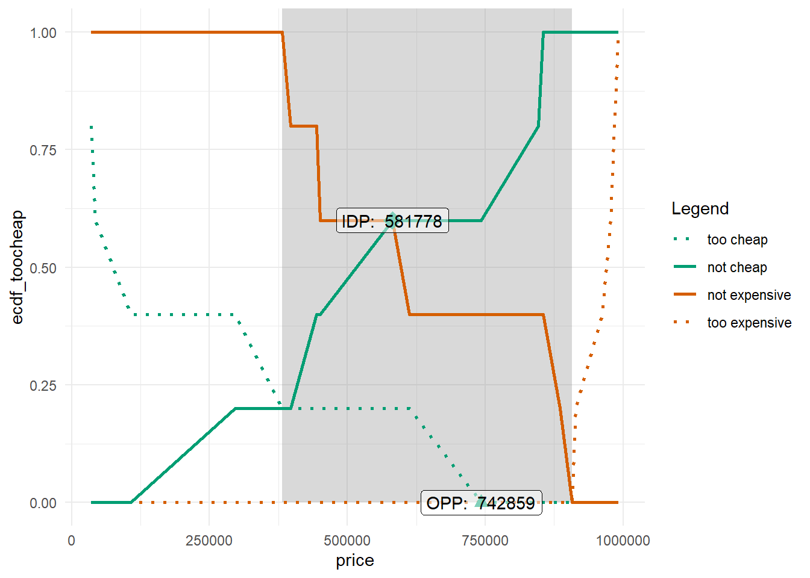

Show the code
d <- read.csv("RawExport.csv")
names(d)[1] "sys_RespNum" "PSMtoocheap" "PSMcheap" "PSMexpensive"
[5] "PSMtooexpensive"Dies soll Ihnen die Möglichkeit bieten, sich etwas genauer mit R und RStudio zu beschäftigen. Um die Programme zu downloaden, gehen Sie entsprechend auf die offizielle Cran bzw. RStudio Seite. Außerdem gibt es ausreichend Tutorials im Internet hierzu.
R ist eine kontext-sensitive Sprache, das bedeutet, dass data anders interpretiert wird als Data.
Um in R Packages zu nutzen, müssen diese zunächst installiert und anschließend geladen werden. Packages werden mit dem folgenden Befehl installiert ‘install.packages(name of the package)’. Um es zu nutzen, müssen Sie es noch mit dem Befehl ‘library(name of the package)’ laden.
Um besser verstehen zu können, welche Argumente bzw. Daten eine Funktion braucht, können Sie Ihren Cursor in den Namen der Funktion platzieren und dann ‘F1’ drücken.
Lassen Sie uns die Daten laden. Hierfür nutzen wir den Befehl read.csv().
Um die Daten zu laden, klicken Sie bitte auf den Button “Click to download”.
d <- read.csv("RawExport.csv")
names(d)[1] "sys_RespNum" "PSMtoocheap" "PSMcheap" "PSMexpensive"
[5] "PSMtooexpensive"Um die Analyse durchzuführen, laden wir das Package pricesensitivitymeter.
install.packages("pricesensitivitymeter", repos = "https://cran.r-project.org/")
library(pricesensitivitymeter)Wir nutzen hier die Funktion psm_analysis(). Diese Funktion braucht in unserem Fall lediglich die 4 Variablen (zu günstig, günstig, teuer, zu teuer). Wir speichern die Ergebnisse in psm_in_R.
psm_in_R <- psm_analysis(toocheap = d$PSMtoocheap, cheap = d$PSMcheap, expensive = d$PSMexpensive, tooexpensive = d$PSMtooexpensive)Anschließend geben wir die Resultate mittels der summary() Funktion aus.
summary(psm_in_R)Van Westendorp Price Sensitivity Meter Analysis
Accepted Price Range: 381264 - 907352
Indifference Price Point: 581778
Optimal Price Point: 742859
---
5 cases with individual price preferences were analyzed (unweighted data).
Total data set consists of 101 cases. Analysis was limited to cases with transitive price preferences.
(Removed: n = 96 / 95% of data)Anschließend wollen wir das ganze nun noch grafisch darstellen. Hierfür nutzen wir das Package ggplot2.
install.packages("ggplot2", repos = "https://cran.r-project.org/")
library("ggplot2")Wir nutzen die Funktion psm_plot(), um die Daten entsprechend für ein Plot auzubereiten. Anschließend rufen wir den Befehl wieder ab und nutzen theme_minimal() von ggplot2. Wie gesagt handelt es sich erstmal um die einfachste Darstellung.
default_psm_plot <- psm_plot(psm_in_R)
default_psm_plot + theme_minimal()
Nun können wir zumindest noch die Axen sowie den Titel anpassen.
default_psm_plot + theme_minimal() + ylab("Prozente") + xlab("Preis") + ggtitle("PSM in R") + theme(plot.title = element_text(hjust = 0.5))